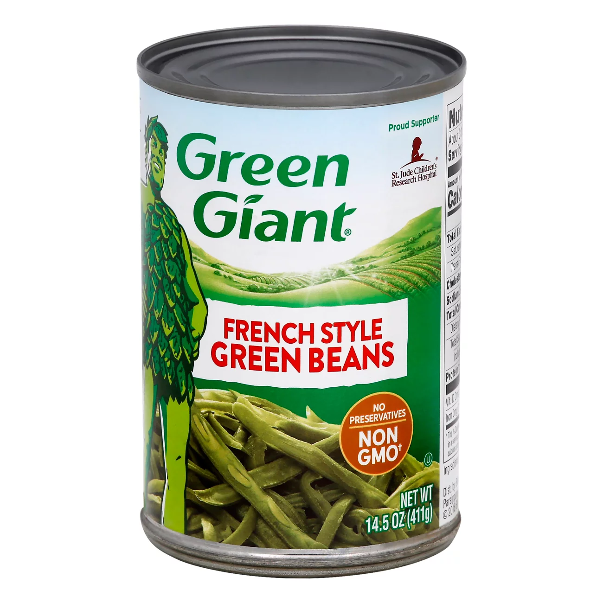
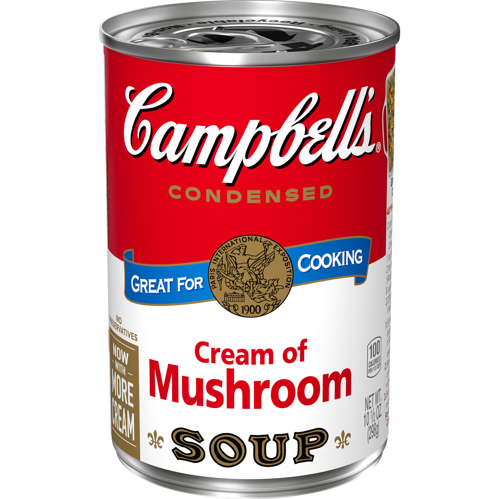
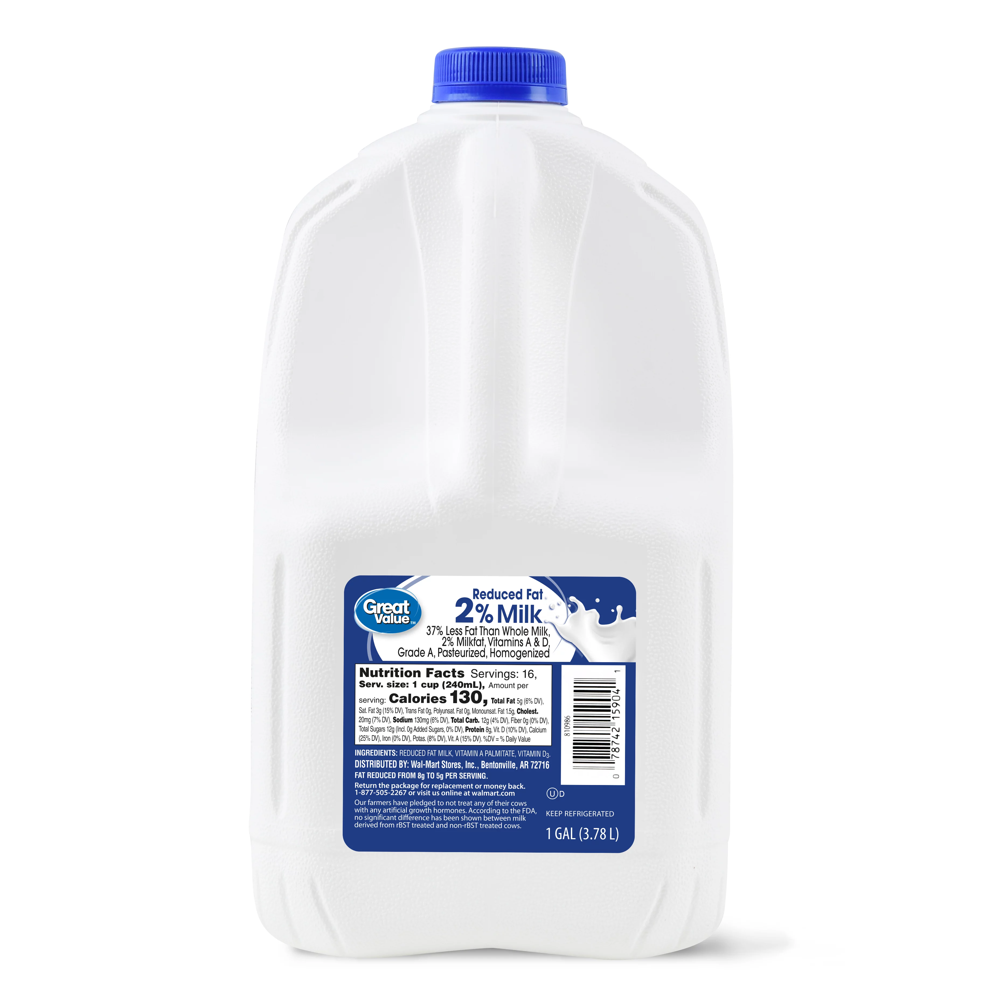
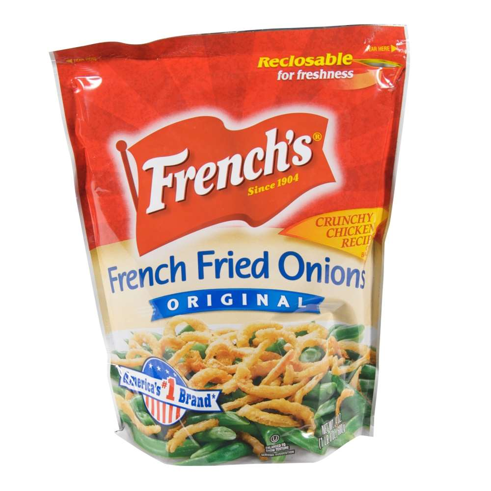
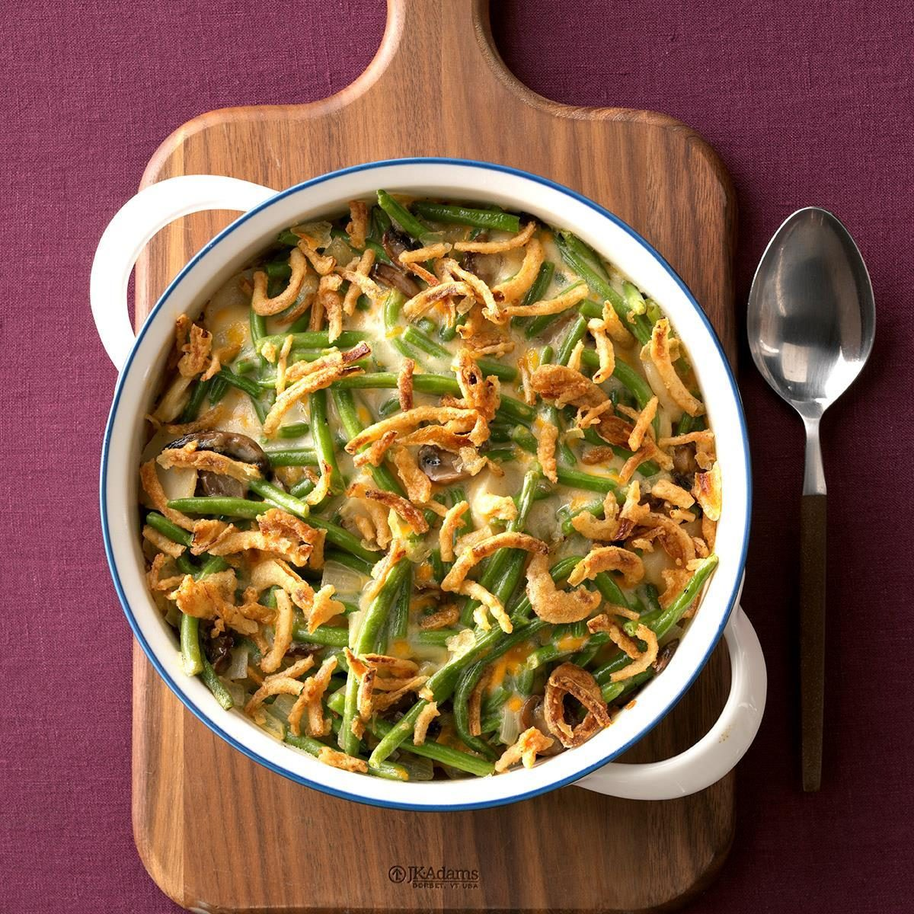

| Ingredient Name | Amount | Picture of Ingredient |
|---|---|---|
| French Styles Green Beans Drained | 2 cans |  |
| Condensed Cream of Mushroom Soup | 1 can |  |
| Milk | 1/4 cup |  |
| Crispy Fried Onions | 1 container |  |
| 1.) Heat oven to 350°F. In 1 1/2-quart casserole or glass baking dish, mix green beans, soup and milk. 2.) Bake 20 to 25 minutes, topping with onions during last 5 minutes of baking, until bubbly.  | ||